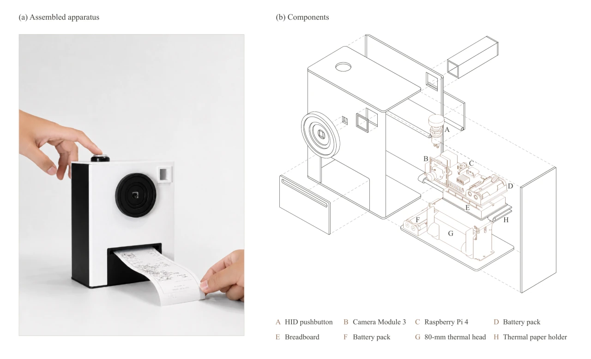
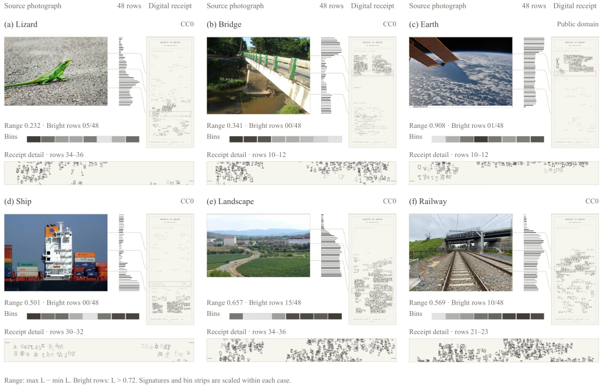
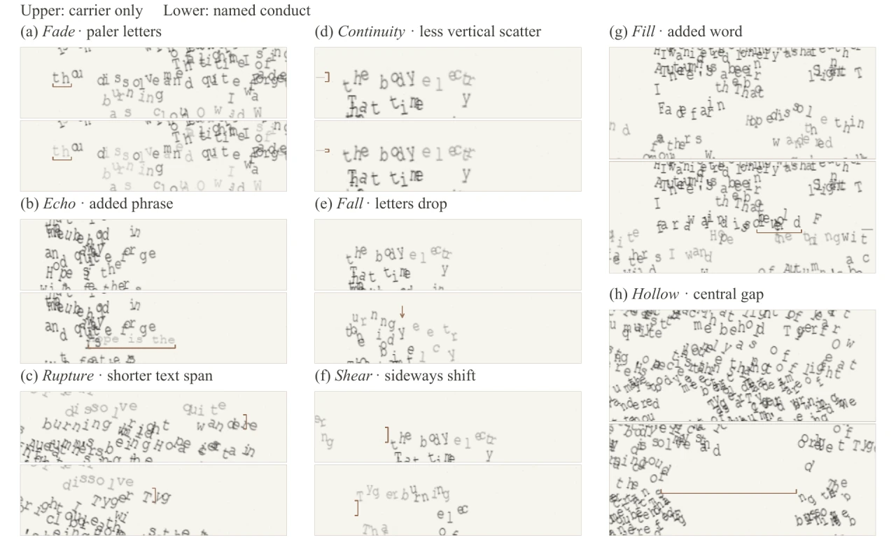
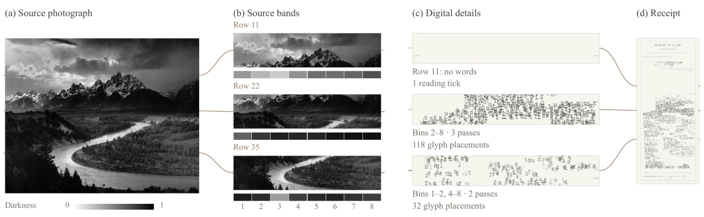
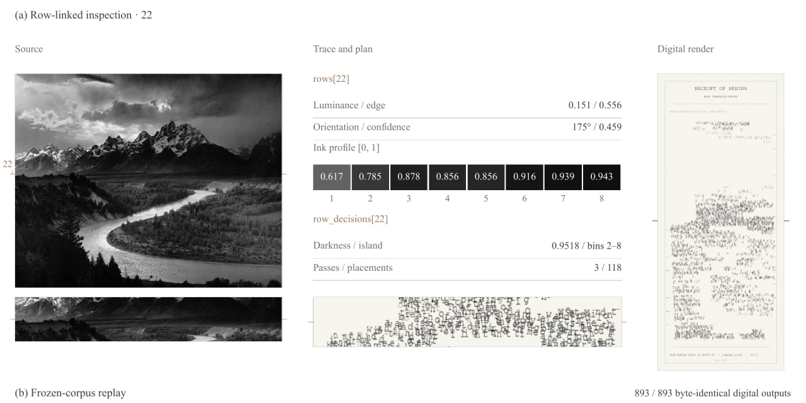
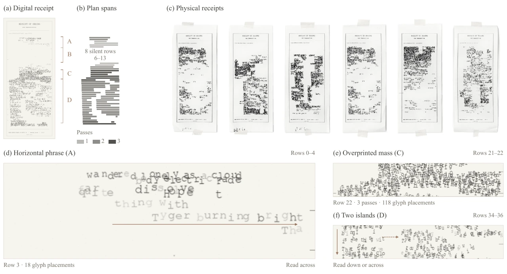
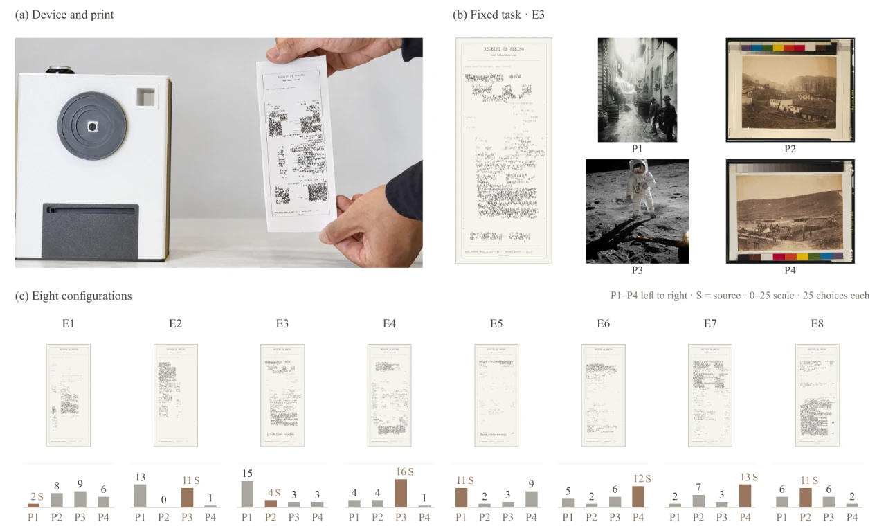

INT–α: Receipt of Seeing
Tools & Technologies: Raspberry Pi 4, Camera Module 3, 80 mm ESC/POS thermal printer, image analysis, spatial typography, rule-based composition, local CLIP retrieval, deterministic replay, custom inspection interface
Accepted at TEI 2027 · Full Paper · DOI: 10.1145/3830006.3864398
Introduction
Receipt of Seeing is a screenless camera that prints a spatial poem on an 80 mm thermal strip. Light, shade, edges, and spatial mass in the photograph shape where words gather, separate, or leave the paper blank. From a distance, the receipt reads as a field of marks; up close, fragments of found poetry emerge.
The project asks how photographic structure can take the form of a printed poem, and how a designer can trace its words and gaps back to the measurements and rules that formed them.


Concept
The camera commits an exposure without a preview. The poem arrives line by line, then separates from the device as a strip that can be held and reread. Its receipt format makes an act of looking into something issued and kept.
Two sets of authored rules give the photograph its influence over the poem. The carrier allocates text regions and gaps from image measurements. Conduct changes how words behave within those regions. Keeping these responsibilities separate makes it possible to inspect which parts of a composition come from the source and which come from the designer's choices.

System
A Raspberry Pi 4, Camera Module 3, one pushbutton, and an 80 mm thermal printer run the pipeline locally. Each photograph is divided into 48 horizontal bands and eight bins across its width. These measurements guide the corresponding receipt rows, retaining the position of dark masses and the gaps between them.
A local selector retrieves a related poem from 580 public-domain entries using visual themes and association prompts. The poem enters the composition in its original word order. The recorded text, measurements, and rendering decisions allow the digital receipt to be replayed later.

Poetic Conduct
Eight operations act on the found language: fade, echo, rupture, continuity, fall, shear, fill, and hollow. They can lighten letters, add a pale phrase, shorten a passage, steady or displace glyphs, or change how words occupy an image-derived region.
The comparison below holds the source measurements, seed, and input word stream fixed while enabling one operation at a time. It makes the contribution of each rule visible, including the phrases that remain readable and the places where words become tonal mass.

From Photograph to Spatial Poem
Photograph → optical trace → composition plan → raster → thermal print.
The Inspector links a source band to its measurements, recorded decisions, and the corresponding digital receipt row. A short passage may come from a narrow allocation in the photograph or from a conduct operation within a wider region. The row records make that difference inspectable.
Across a frozen corpus of 893 images, saved traces, plans, and resources reproduced every digital output byte for byte. This checks the recorded composition process; the meaning of the resulting poem remains a question for its reader.


Spatial Poems
Reading can move across a phrase, down a column, or between separated groups of words. Dense passages accumulate into dark fields, while word-free rows interrupt the strip. These changes in legibility arise from the photograph's distribution of light and shade together with the authored conduct rules.
The physical print adds another rhythm: a gap first appears as blank paper passing through the slot, then becomes a space the reader can return to after tearing off the receipt.

Prototype and Study
The assembled camera completed all 30 delivery trials. Separately, 25 participants encountered the device and compared eight physical receipts with four fixed printed photographs for each receipt. They selected the source in 40.0% of choices, with results ranging from 8% to 64% across the eight configurations.
These study receipts used a shared stream of eight poetry excerpts. The thematic selector was checked in software; it was not part of the participant study. The matching results describe these fixed receipt-and-photograph sets, rather than general image recognition.

Reflection
Readers could understand the mapping and still disagree about the result. Some attended to the arrangement and poetry of the words; others missed the people, atmosphere, or memories carried by the photograph. Following how an output was made did not settle what it meant or whether it worked as photographic expression.
For me, the design task is to choose which relations from a photograph should remain visible, decide how language can change within them, and calibrate those decisions on actual paper. The saved records make those choices available for inspection; the detached receipt leaves room for a reader's own judgment.